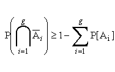
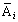
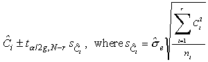
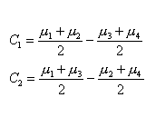
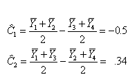
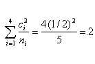
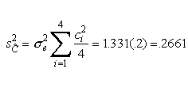
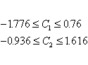
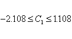

|
7.
Product and Process Comparisons
7.4. Comparisons based on data from more than two processes 7.4.6. How can we make multiple comparisons?
|
|||
| This method applies to an ANOVA
situation when the analyst has picked out a particular set of pairwise
comparisons or contrasts or linear combinations in advance. This set is
not infinite, as in the Scheffé case, but may exceed the set of
paiwise comparisons specified in the Tukey procedure.
The Bonferroni method is valid for equal and unequal sample sizes. We restrict ourselves to only linear combinations or comparisons of treatment level means (pairwise comparisons and contrasts are special cases of linear combinations). We denote the number of statements or comparisons in the finite set by g. Formally, the Bonferroni general inequality is presented by:   are any events, such as the event that a calculated confidence interval for a particular linear combination of treatments includes the true value of that combination. Therefore, if multiple interval estimates are desired with an overall confidence coefficient 1-a , one constructs each interval with confidence coefficient (1-a/g), and the Bonferroni inequality insures that the overall confidence coefficient is at least 1-a.In summary, the Bonferroni method states that the confidence coefficient is at least 1-a that simultaneously all the following confidence limits for the g linear combinations Ci are correct:  Example We wish to estimate, as we did using the Scheffe method, the following linear combinations (contrasts):  The point estimates are:  As before, for both contrasts, we have   For a 95 percent overall confidence coefficient using the Bonferroni method the t-value is t.05/4;16 = t.0125;16 = 2.473. Now we can calculate the confidence intervals for the two contrasts.For C1 we have confidence limits -.5 ± 2.473 (.5158) and for C2 we have confidence limits .34 ± 2.473 (.5158). Thus, the confidence intervals are:   Comparison of Bonferroni Method with Scheffé and Tukey Methods. 1. If all pairwise comparisons are of interest, Tukey has the edge. If only a subset of pairwise comparisons are required, Bonferroni may sometimes be better. 2. When the number of contrasts to be estimated is small, (about as many as that there are factors) Bonferroni is better than Scheffé. Actually, unless the number of desired contrasts is at least twice the number of factors Scheffé will always show wider confidence bands than Bonferroni. 3. Many computer packages calculate all three methods. So, study the
output and select the method with the smallest confidence band.
|
|||